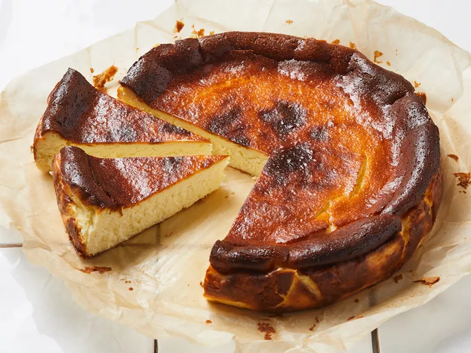

Burnt Cheesecake

The Burnt Cheesecake, a delightful dessert that originated from the Basque region of Spain, has taken the culinary world by storm with its unique, caramelized exterior and creamy interior. Unlike traditional cheesecakes, this version is intentionally baked at a high temperature to achieve a beautifully burnt top that contrasts with the smooth, rich center. The simplicity of the ingredients—cream cheese, sugar, eggs, and cream—belies the complexity of flavors that emerge during the baking process. With variations that include the addition of fruit or a hint of vanilla, the Burnt Cheesecake is a versatile treat that's as enjoyable to make as it is to eat. Whether served at a casual gathering or as the finale to an elegant meal, it's a dessert that's sure to impress.
Ingredients
- Cream Cheese: Use Philadelphia brand cream cheese (or other creamy cheeses like mascarpone). La Viña, the famous cafe in San Sebastián, uses Philadelphia cream cheese.
- Eggs: Large eggs are essential for the custardy texture.
- Sugar: Standard granulated sugar adds sweetness.
- Heavy Cream: Also known as whipping cream, it contributes richness and creaminess.
- Flour: A small amount of all-purpose flour helps with texture, but you can omit it if you prefer.
Steps
- Prep the Oven and Ingredients:
- Preheat the oven for at least 30 minutes.
- Bring cream cheese, eggs, and heavy cream to room temperature.
- Mix the Ingredients:
- Gradually mix the following ingredients in a large bowl:
- Cream Cheese
- Eggs
- Heavy cream
- Pour the batter:
- Pour the batter into a cake pan.
- Bake at 220°C for 30-35 minutes.
- Cool and Enjoy:
- Let the cheesecake cool to room temperature. Unmold and enjoy the contrast between the burnt crust and the soft, creamy center!
Return Home